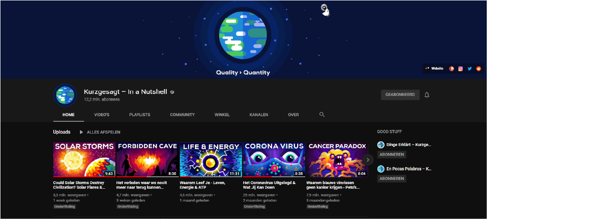
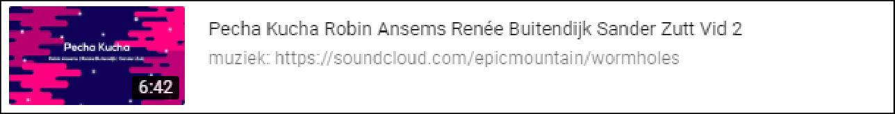

Per groepje van 3 studenten maak je een korte presentatie (Pecha Kucha) over een onderwerp dat betrekking heeft op de kracht van visual design.
Pecha Kucha (ぺちゃくちゃ) is een concept voor het houden van korte, creatieve presentaties. De naam stamt af van een Japans woord voor 'prietpraat'. Bij een Pecha Kucha- evenement presenteren de deelnemers een diavoorstelling van twintig afbeeldingen in een totale tijd van 6 minuten en 40 seconden. Elke afbeelding wordt precies 20 seconden getoond. Deze eisen dwingen tot creativiteit en het to the point zijn. Er zijn geen inhoudelijke restricties, meestal gaat het om een product of een idee.
Ik heb samengewerkt met sander en Renee. Het onderwerp dat wij hebben gekozen voor onze Pecha Kucha is het bedrijf genaamd Kurzgesagt. Kurzgesagt maakt korte informatieve filmpjes op Youtube over alles wat met science te maken heeft.
Kurzgesagt
Voordat je het filmpje bekijkt, alle editing van het filmpje heb ik gedaan. De volgorde van de Pecha Kucha is Sander, dan Renee en ik als laatste.
Ik had nog nooit een Pecha Kucha gemaakt of gepresenteerd, en het was een hele fijne manier van werken, maar vooral ook de manier van presenteren was erg fijn. Ik hou er van om te presenteren en dit was het perfecte vak om deze Minor mee af te sluiten.
7,5